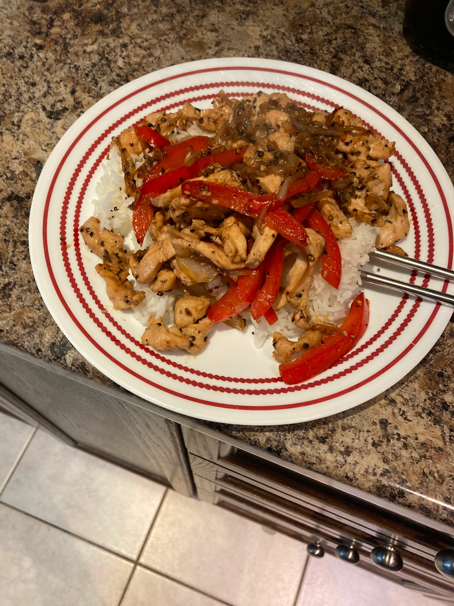

Chicken Rice & Veggies
An everday body, soul, and mind building meal

Prepwork
- Dice or slice your preffered veggies. We are using Mushrooms, Yellow onions, Red peppers
- Dice or slice a whole chicken breast
- start cooking at least 1 cup of preferred rice in a rice cooker, or pot
- Season your chicken with salt & pepper
- Into a bowl, mix 1 cup soy sauce, 1/8th cup oyster sauce, and seasme seed oil
- Add a sprinke of chilli flakes, and 1 teaspoon of honey. mix well
Cooking steps
- Add a glug of a high-smoke point oil into a large pan over high eat
- Add your chicken into the hot pan
- stir your chicken around every minute or so, until all sides are cooked, and the internal temp reads 155c +
- remove the chicken from the pan, and add in your veggies
- Lower the heat to medium-high and cook the veggies until your preferred doneness
- add the chicken back into the pan, and add your sauce
- Stir all ingredients until everything is incorporated
- Serve over your Rice
Home